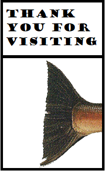

What, you say? Cookies made of salmon? Don't worry, they come in several varieties, and most don't taste like fish at all, but they all contain Pacific Northwest salmon.
All stores open 6am to 9pm, seven days a week
Just a fish throw from Pike Place Market is our flagship location, on the south east corner of First and Pike. You've seen salmon in the air, now see them on your plate.
Need a last-minute gift for friends back home? Try our location in the SeaTac Airport main terminal. If you're in the neighorhood, it's worth it to buy a plane ticket to anywhere to get past security.
In the shadow of the Space Needle is our Seattle Center store. The Seattle World's Fair may be gone, but Pat's Salmon Cookies live on.
Sound Transit built a Link station just for our store! Just kidding, but if you're in Seattle's most vibrant, dynamic neighborhood, we have a salmon cookie just for you.
Why did the first settlers choose Alki? To reach our newest store just off Alki Beach. Real salmon leap on to the beach to get a closer look.
